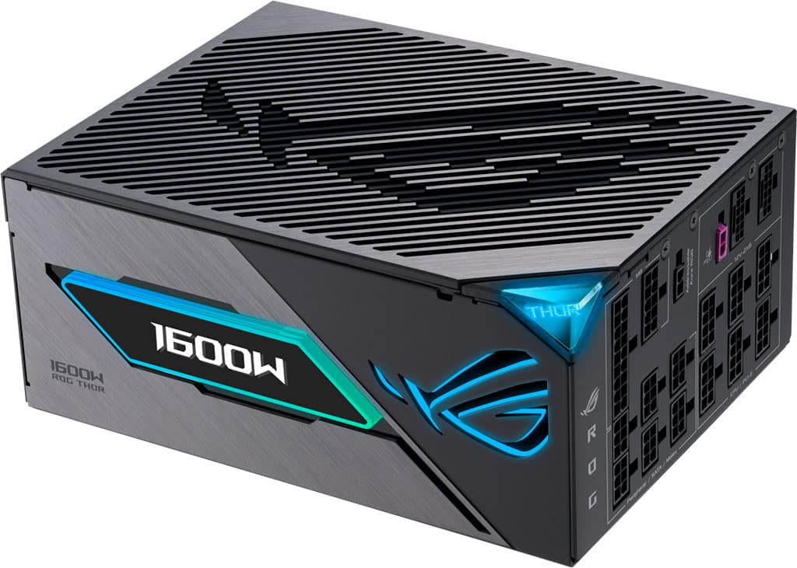
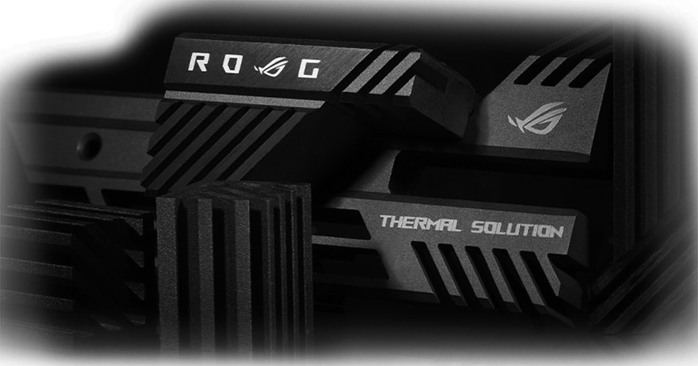

SUS ROG Thor III: fuentes de alimentación de hasta 1.600W de potencia con MOSFET GaN
ASUS anunció sus nuevas fuentes de alimentación tope de gama, las Republic of Gamers (ROG) Thor
III. Estas fuentes de alimentación alardean de incluir MOSFET de nitruro de galio (GaN). Se
incluye un sensor de voltaje GPU-FIRST, pines de cobre de alto rendimiento, un Modo Turbo, y
algo menos relevante: una pantalla OLED.
Vamos a lo importante. ¿Qué significa que una fuente use MOSFET GaN? Para empezar, los
transistores MOSFET de nitruro de galio (GaN) permite una mayor eficiencia energética. Esta
eficiencia llega debido a que el GaN tiene una conductividad mucho mejor que el silicio, lo que
reduce las pérdidas de energía durante la conmutación. Dicho de otra forma, es más eficiente
porque se de traduce en desperdiciar menos energía en forma de calor. También permite que la
fuente de alimentación sea más pequeña y ligera, a la par de que ofrece una mayor capacidad de
conmutación y una mayor durabilidad. Su vida útil aumenta al generar menos calor y operar a
temperaturas más bajas.
Así lucen las fuentes de alimentación ASUS ROG Thor III

Tal y como adelantábamos, las ASUS ROG Thor III no solo alardeaban de tener MOSFET GaN. También incluye el sensor de voltaje GPU-FIRST. Como su propio nombre indica, está enfocado a la tarjeta gráfica, permitiendo suministrarle energía por medio de un estabilizador de voltaje inteligente patentado que ajusta el voltaje a la tarjeta gráfica hasta en un 45%. Respecto al Modo Turbo, se indica que en ciertas circunstancias de muy alta carga, podrás tener acceso a una refrigeración extendida gracias al uso de componentes de primera calidad y una curva de funcionamiento del ventilador de forma optimizada.
Menos relevante, está la incorporación de una pantalla OLED magnética. Esta servirá para poder mostrarte el consumo en tiempo real de tu sistema. Tenemos compatibilidad con el estándar ATX 3.1, conectividad PCI-Express 5.0 mejorada, cables modulares grabados, y una prueba de su calidad es la garantía extendida de 10 años.
Gracias a los MOSFET GaN, ASUS indica que sus fuentes de alimentación ROG Thor III ofrecen hasta un 30% más de eficiencia energética respecto a otros modelos más tradicionales. También indicando que con esta tecnología permite ofrecer potentes fuentes de alimentación con un tamaño reducido sin comprometer el rendimiento o temperaturas.
Modelos disponibles y resto de la información

El modelo tope de gama es la ASUS ROG Thor 1600W Titanium III, pasando por una ASUS ROG Thor 1200W Platinum III y ROG Thor 1000W Platinum III. Su propio nombre indica la potencia máxima de funcionamiento, además de que son fuentes con un certificado energético 80 Plus Titanium o Platinum. A nivel de sonoridad, se indica que el modelo de 1.600 vatios cuenta con la certificación Cybenetics Lambda A+, por lo que es muy silenciosa. Permitiendo así ser muy potente sin comprometer la sonoridad de tu sistema.
Adicionalmente se emplea un avanzado sistema de refrigeración con disipadores térmicos ASUS ROG. Además el propio chasis de las fuentes es de aluminio, actuando también como un disipador. Por su parte, los ventiladores prometen una vida útil de hasta 80.000 horas de funcionamiento antes de presentar cualquier tipo de problema de funcionamiento. Alargando también la durabilidad de este componente. Esto también le permite funcionar en un modo "Zero RPM". Que implica que el ventilador no girará cuando sea posible (bajas temperaturas o baja carga). Por desgracia, ni una palabra en torno a la disponibilidad y precio.
La fuente ASUS ROG Thor 1600W Titanium III ofrece la máxima potencia y estabilidad que exigen los jugadores. Un MOSFET GaN de última generación ofrece una eficiencia superior, y el sensor de voltaje «GPU-First» cuenta con un estabilizador de voltaje inteligente patentado que garantiza un rendimiento y una estabilidad de primer nivel. Además, el modo Turbo ofrece la máxima refrigeración durante el overclocking u otras cargas de trabajo exigentes.
La ROG Thor 1600W Titanium III también cuenta con la característica pantalla OLED de Thor, ahora mejorada para una fácil fijación magnética, que se puede intercambiar a ambos lados de la unidad para acomodar la instalación de la fuente de alimentación con o sin ventilador.